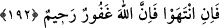

(s.a.) da Mekke’nin fethedildiği gün İslâm’ı kabûl etmeyen müşrikleri Mekke’den
çıkarmıştır.
“Fitne, katilden (adam öldürmekten) daha beterdir.” Fitne kelimesinin asıl anlamı;
altın madeninin filizini saflaştırmak için ateşe sokmaktır. Bu asıl mânâya teşbih edilerek
fitne; imtihan vesilesi olan, insanı belâ ve sıkıntıya sokan her şey için kullanılmıştır.
Yâni özyurdundan çıkarılmak gibi insanları azâba dûçâr kılan belâ ve meşakkatler nefse
ölümden daha zor, daha ağır gelir. Çünkü öldürmenin verdiği zahmet geçicidir. Halbuki
fitnenin getirdiği elem ve ızdırap uzun süre devam eder. Âyetteki “fitne” kelimesini öz
yurdundan çıkarılmak şeklinde tefsir ettiğimizde, “fitne, öldürmekten daha ağırdır”
cümlesi “Sizi çıkardıkları yerden siz de onları çıkarın” cümlesine bağlı olur. Böylece
önceki cümlenin mânâsı, aynı anlamı ifâde eden “Fitne, öldürmekten daha ağırdır.”
cümlesiyle kuvvetlendirilmiş ve müşriklerin yurtlarından çıkarılması teşvik edilmiştir.
Bu durumda âyetin anlamı şöyledir:
Sizin müşrikleri Mekke’den çıkarmanız onlara, kendilerini öldürmenizden daha ağır
gelir. Müşrikler küfürde direttikleri ve size savaş açıp kan dökmekte ısrar ettikleri için
öz yurtlarından çıkarılmak gibi böyle ağır bir cezâyı hak ettiler.
Bir İslâm düşünürüne: “İnsana ölümden daha ağır gelen nedir?” diye sorulduğunda:
“Ölümü aratan şey,” cevâbını vermiştir. İşte Allah Teâlâ bu âyet-i kerîmede öz
yurdundan çıkarılmanın da ölümü temennî ettiren fitne ve belâlardan olduğunu
belirtmiştir.
“Fitne öldürmekten daha beterdir.” cümlesi “Onları nerede bulursanız
öldürün” cümlesine bağlı da olabilir. Bu durumda müslümanlar, Harem bölgesinde bile
müşrikleri öldürmeye teşvik edilmiş olur. Buna göre âyetin anlamı şöyledir: Müşrikleri
nerede yakaladığınıza hiç aldırış etmeyin. İster helâl, ister haram bölgede, nerede
bulursanız, nerede yakalarsanız öldürün onları. Çünkü Kâbe’yi ziyâret etmenizi
engellemeleri, sizin onları Mescid-i Haram’da öldürmenizden daha kötüdür. Fakat,
“Mescid-i Haram’ın yanında onlar sizinle savaşmadıkça siz de onlarla savaşmayın.”
Savaşı siz başlatarak Mescid-i Harâm’daki savaş yasağının çiğnenmesine kapı açmayın.
Bu bölüm, özellikle Mescid-i Haram’da hangi şartlarda savaşılabileceğini açıklamış ve
“Onları nerede yakalarsanız öldürün.” kısmında genel hükmü tahsîs etmiştir. “Eğer
müşrikler sizinle Mescid-i Haram’da savaşırlarsa, siz de onları, savaş yasağı
bulunan o bölgede hiç çekinmeden öldürün.” Zirâ Harem bölgesindeki yasağı ihlâl
ederek onun hürmetine önce onlar saygısızlık ettiler. O halde cezânın en şiddetlisini de
onlar hak ettiler. “İşte kâfirlere verilecek cezâ böyledir,” kendilerine başkalarına
yaptıklarının aynıyla mukâbele edilir.